Welcome to the Pyrenean ibex Page
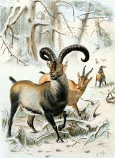 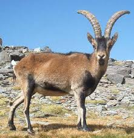 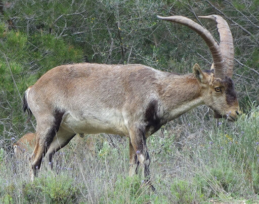 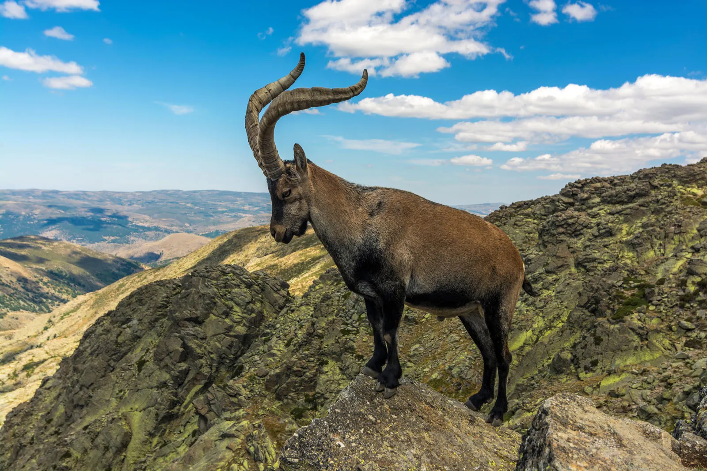
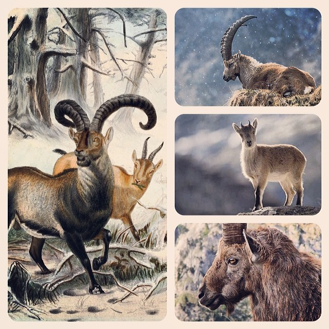
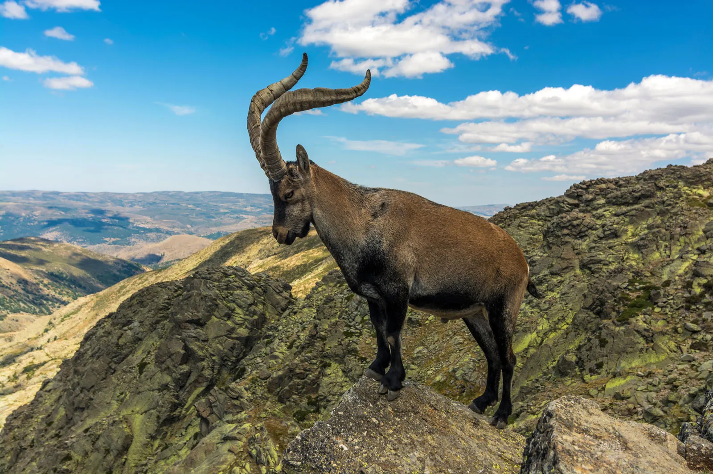
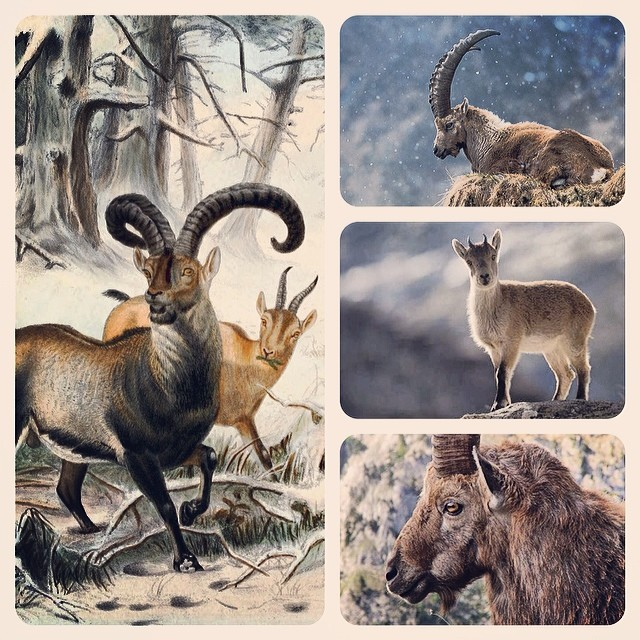
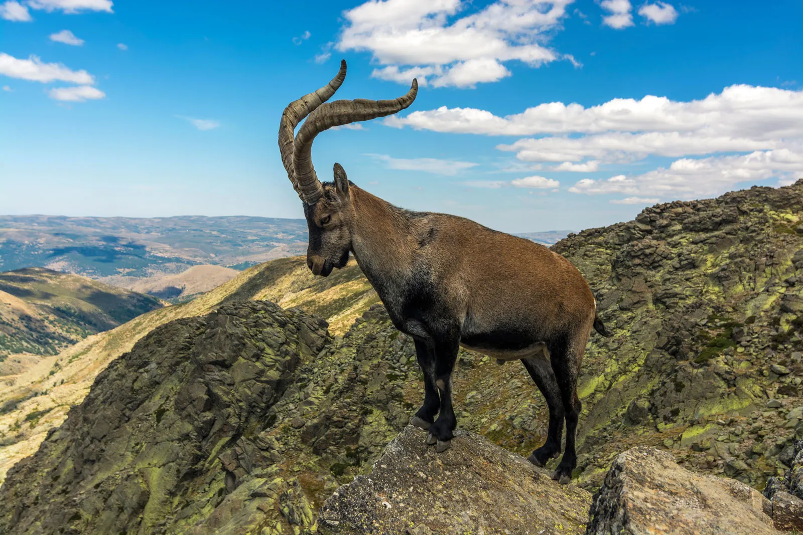
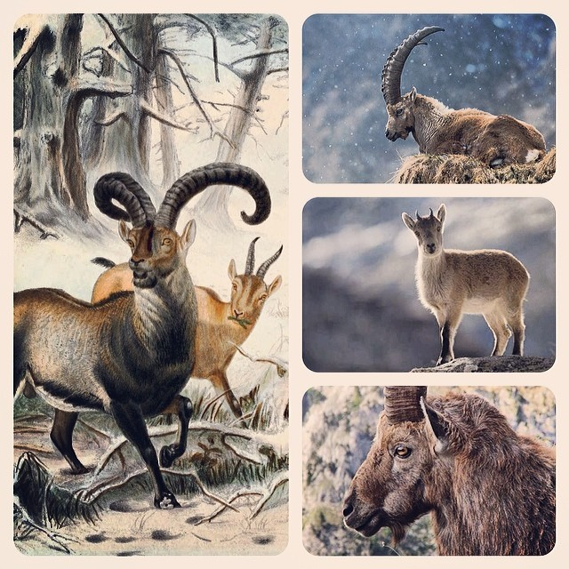
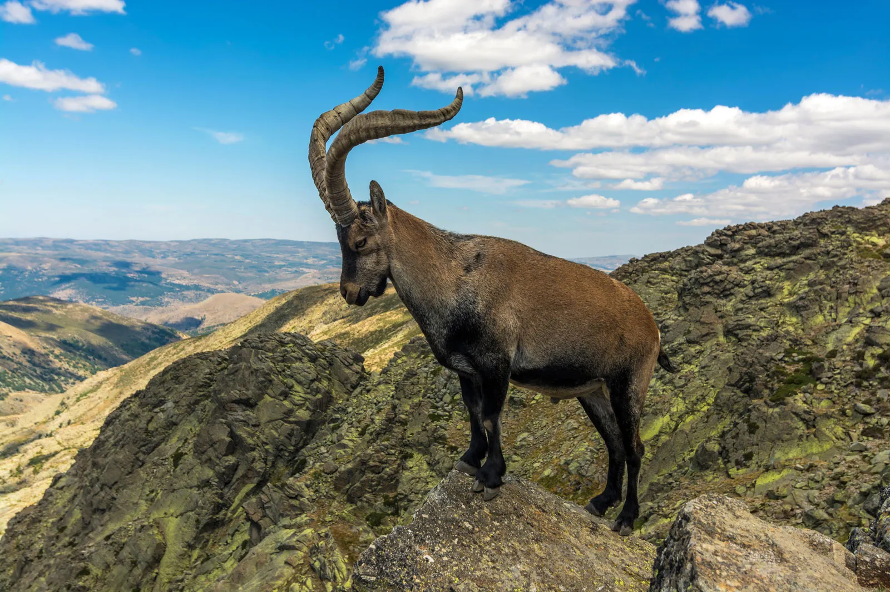
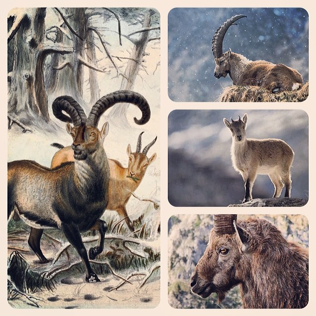
The ancient ibex, a formidable wild goat species, once roamed the rugged mountain ranges of Europe and Asia, showcasing remarkable adaptations to high-altitude environments. Fossil evidence reveals that early ibex species were larger and more robust than their modern descendants, featuring powerful limbs and well-developed musculature that enabled them to conquer the harsh, rocky terrains they called home. Their most distinctive feature, the backward-curved horns, served multiple purposes: defense against predators, dominance displays during mating contests, and tools for digging through snow or debris to uncover vegetation. These evolutionary traits highlight the ibex's incredible resilience, a testament to the challenges posed by their extreme habitats.
The ecological role of the ancient ibex was critical in maintaining the balance of the mountain ecosystems they inhabited. As herbivores, they grazed on a wide variety of grasses, shrubs, and alpine plants, preventing overgrowth and supporting the renewal of vegetation. This grazing activity also created opportunities for other species, such as insects, birds, and small mammals, to thrive in the same environment. The presence of ibexes helped stabilize food chains, as they were a prey species for apex predators like snow leopards, wolves, and large birds of prey. In shaping their habitats, ibexes contributed to the biodiversity and resilience of these fragile ecosystems, ensuring their sustainability over millennia.
Beyond their ecological importance, the ancient ibex held a profound cultural significance for early human societies. Evidence of their impact can be found in prehistoric art, such as cave paintings, carvings, and sculptures that often depict ibexes in dynamic poses or scenes of hunting. These artistic renditions suggest that ibexes were not merely a source of food and resources but also symbols of endurance, strength, and survival. Some ancient communities even revered the ibex as a sacred animal, associating it with mountain deities or fertility rituals. Their horns, bones, and hides were often repurposed into tools, ornaments, and ceremonial objects, further underscoring their multifaceted role in human life during ancient times.
In modern times, the legacy of the ibex continues, as their living descendants face mounting challenges due to human activity and climate change. Habitat loss from deforestation, agricultural expansion, and urbanization has fragmented their populations, isolating them in smaller, less connected areas. Climate change has further intensified these threats, altering the delicate balance of their alpine habitats by reducing the availability of food and water. Conservation efforts today aim to mitigate these risks through habitat restoration, anti-poaching initiatives, and scientific research. By studying the evolutionary history of the ibex, scientists are uncovering strategies to strengthen their populations and adapt to changing environmental conditions, ensuring these majestic creatures endure for future generations.
The story of the ancient ibex is a powerful reminder of nature's ability to endure and adapt through time. From its role as a keystone species in its ecosystem to its symbolic significance in early human cultures, the ibex embodies resilience and harmony with the natural world. Today, it serves as a critical symbol of conservation, emphasizing the need to protect our planet's biodiversity and learn from the lessons of the past. By preserving the habitats and studying the evolution of the ibex, we not only safeguard a remarkable species but also reaffirm our responsibility to protect the intricate web of life that sustains us all. The ancient ibex’s legacy is one of survival, strength, and the enduring bond between humans and the natural world.